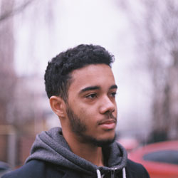

Marc
Marc
Soumoussou
- Skype
- Phone
- City
- mariksoum@gmail.com
- themsoum7
- +38 (096) 270 72 12
- LinkedIn Profile
- Lviv
UCU graduate who finished IT Step’s "Web Development and promotion" course where I learned different tools and technologies which are used in software development. I want to work as a front-end developer in a good company and become a specialist in this area.